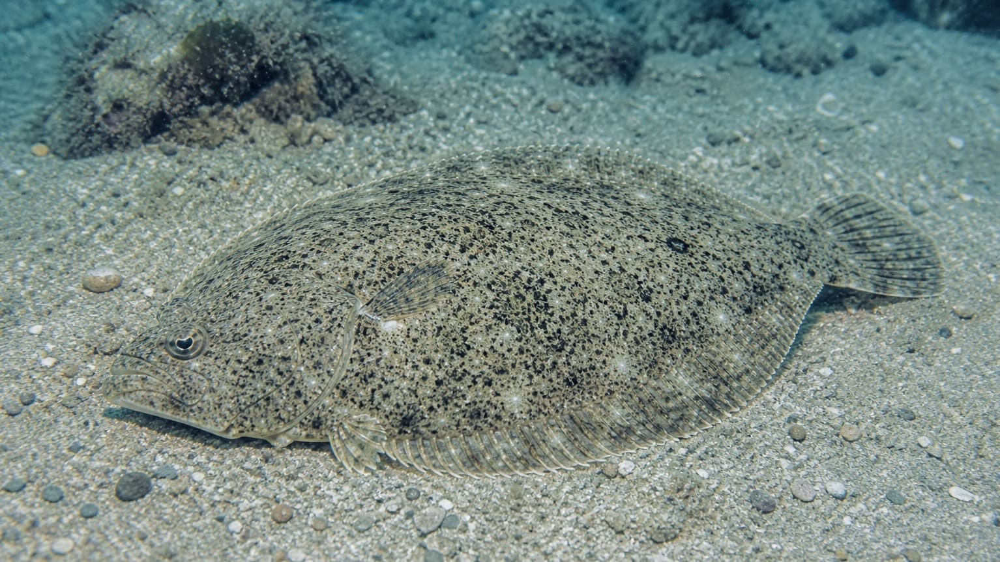
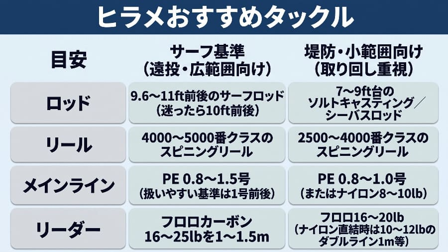
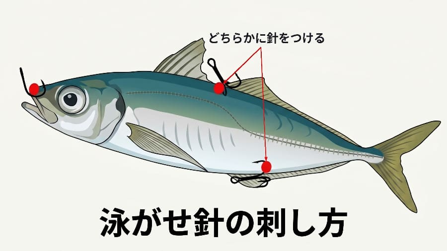

【ヒラメ釣り完全攻略】70cm超「座布団ヒラメ」を狙うサーフ＆堤防のルアー・泳がせ釣り

広大なサーフ（砂浜）や身近な堤防、河口周辺から狙える陸っぱり屈指の高級魚・ヒラメ。砂底にひっそり身を潜めるおとなしい魚と思われがちですが、その素顔は鋭い歯で小魚を襲う獰猛な肉食魚です。なかでも70cmを超える肉厚の大型個体は「座布団ヒラメ」と呼ばれ、多くのアングラーが一度は手にしたいと憧れる夢のターゲットになっています。ヒラメ釣りで釣果を分けるのは、ただ闇雲に沖へフルキャストすることではありません。小魚（ベイトフィッシュ）が寄る条件、離岸流やカケアガリといった海底の地形変化、そして潮の動きを結びつけて「待ち伏せ場所」を絞り込む戦略がカギを握ります。
本記事では、ヒラメの攻撃的な生態と「座布団」クラスの成長事情から、四季ごとの接岸パターン、ポイントを見抜く地形の読み方、ルアー釣り・泳がせ釣りそれぞれの実践テクニック、波打ち際でバラさない取り込み方まで、現場でそのまま使えるノウハウを徹底解説します。
1. ヒラメの正体は獰猛なフィッシュイーター｜生態と「座布団ヒラメ」の成長ライン
ヒラメ（カレイ目ヒラメ科、学名：Paralichthys olivaceus）は、北海道以南から九州にかけての沿岸域に広く分布し、ごく浅い波打ち際から水深200mほどの砂地・砂泥底・砂礫底に生息しています。体色は茶褐色から黒褐色で、環境に合わせて砂底に溶け込む巧みな擬態能力を備えています。寿命は10年を超えることもあり、成長すると全長1mに達する個体も珍しくありません。
| 項目 | 特徴・目安 |
|---|---|
| 分類・学名 | カレイ目ヒラメ科／Paralichthys olivaceus |
| 主な分布 | 北海道以南〜九州の沿岸域 |
| 生息環境 | ごく浅場〜水深200mの砂地・砂泥底・岩礁混じりの砂礫底 |
| 食性 | 肉食性（完全なフィッシュイーター） |
| 主なベイト | イワシ類、シロギス、アジ、ハゼ、メゴチ、コノシロ、ボラの幼魚（イナ）、小サバなど |
| 寿命・最大サイズ | 10年以上／全長1mを超えることもある |
底に張り付くだけではない「2mジャンプ」の瞬発力
普段は砂に身をうずめて気配を消していますが、ひとたび捕食スイッチが入ると底生魚のイメージを覆すほど機敏に動きます。大きな口と鋭い歯を武器に、小魚を一気に丸呑みするのが得意技です。
とくに注目したいのは縦方向への機動力です。浅場であれば、海底から一気に2m近くも飛び上がって中層・表層付近のルアーや小魚に食らいつくことがあります。イワシなどの群れが接岸したタイミングでは、波打ち際からわずか数十メートル圏内という意外な至近距離まで良型が差し込んでくることも珍しくありません。また、砂地周りの防波堤では、クロダイ狙いのコマセに集まった小魚を追ってヒラメが足元へ寄ってくるケースもよく見られます。
釣り上げた際、大きな口の奥には鋭い歯が並んでおり、エラ蓋や背ビレ・尻ビレの棘も危険です。素手で口をつかまず、必ずフィッシュグリップとプライヤーを使って安全に針を外しましょう。
ソゲから「座布団ヒラメ」へ｜サイズ別の呼び名と雌雄の成長差
釣り人の間では、ヒラメの大きさに応じて次のような愛称で呼び分けるのが一般的です（※正式な生物学的分類ではなく、境界は地域や釣り人によって多少前後します）。
| 呼び名 | サイズの目安 | 特徴 |
|---|---|---|
| ソゲ | 40cm未満 | 成長途上の若魚。数が出やすいサイズ帯 |
| ヒラメ | 40〜60cm | 陸っぱりで本命として手応え十分の標準〜良型サイズ |
| 大型ヒラメ | 60〜70cm | 体高と厚みが増し、強烈な重量感を味わえるクラス |
| 座布団ヒラメ | 70cm以上 | 釣り人の憧れ。圧倒的な肉厚ボディを誇る特大トロフィー |
ヒラメはオスとメスで成長スピードに明確な差があり、同じ年齢でもメスのほうが大型に育ちやすい特徴があります。宮城県による東北海域の調査では、成熟する全長目安がオス約35cmに対してメス約44cmと報告されています。つまり、陸っぱりから稀に出会える70cmオーバーの「座布団ヒラメ」は、長い年月を生き抜いた大型のメスである可能性が高い特別な存在と言えます。
地域ごとに大きくズレる産卵シーズン
ヒラメの産卵期は海域の水温に左右されるため、日本列島の南と北で時期が大きく異なります。
| 地域 | 産卵期の目安 |
|---|---|
| 九州沿岸 | 1〜3月 |
| 千葉県など本州中部以南の太平洋岸 | 2〜5月 |
| 本州の日本海側 | 5〜7月 |
| 北海道沿岸 | 6〜8月 |
| 東北の太平洋岸 | 5〜9月 |
※海域や系群、その年の水温推移によって変動します。産卵が絡む時期は沿岸の浅場へ寄る個体が増えるほか、産卵前後の体力回復に向けて積極的にベイトを追うタイミングが狙い目になります。
2. 春・夏・秋・冬の季節別パターンと狙うべき時間帯・潮回り
ヒラメは一年を通じて狙える魚ですが、水温とベイトの動きに合わせて居場所が大きく変わります。なかでも接岸個体が増えやすい「春」と「秋」が2大ハイシーズンです。
| 季節 | 魚の動向と攻略のポイント |
|---|---|
| 春（3〜5月） | 水温上昇と産卵絡みの接岸シーズン。サーフの浅場、河口周り、港湾の砂地、岩礁帯脇などで大型・座布団ヒラメの実績が急上昇する（※産卵期は地域差あり）。 |
| 夏（6〜8月） | 高水温を避けて沖の深場へ落ちる個体が増える一方、小魚が寄る場所には浅場でも残る。水温が落ち着く早朝・夕方を軸に、河口や潮通しの良い港湾部を重点チェック。 |
| 秋（9〜11月） | 屈指の人気ハイシーズン。イワシなどの小魚が大量接岸するのに合わせてヒラメも岸へ大接近。イワシの群れが入るサーフ、河口払い出し、潮目、堤防周辺を広く探る。水温低下期は日中も好機。 |
| 冬（12〜2月） | 地域差が大きい時期。深場へ移る個体とエサを追って浅場に残る個体が混在するため、水深のあるサーフ・港湾・河口でベイトの有無を見極める。九州など南方では産卵シーズンに突入。 |
時間帯の考え方｜マズメの強みと「日中」ならではの武器
ヒラメ狙いでまず押さえたいのは、ベイトの動きが活発になる朝マズメ（日の出前後）と、沖にいた魚が岸へ差し込みやすい夕マズメ（日没前後）です。とくにサーフでは空が白み始める前にポイントへ立ち、明るくなり始めた瞬間からキャストできる準備を整えておくと初動のチャンスを逃しません。
一方で、ヒラメは日中にも十分に勝負できるターゲットです。日中は太陽光の角度によって離岸流の筋や海底の色変化、鳥の動き、ベイトの気配を目視で確認できるという大きなアドバンテージがあります。「潮が効いている」「ベイトの気配がある」「波や流れに変化がある」「極端な濁りがない」の条件が揃っていれば、昼間でも躊躇なく竿を出す価値があります。
大潮に縛られない潮回りの見極め
「大潮だから釣れる」とは限りません。大切なのは潮位の干満差の大きさそのものではなく、今立っている釣り場で潮がしっかり動いているかどうかです。潮が動くことでベイトが運ばれ、ヒラメの捕食スイッチが入ります。逆に大潮で流れが速すぎるとルアーが浮き上がって底取りが難しくなる場面も多いため、中潮や小潮でも潮が効き始めるタイミングを狙うほうが釣りやすく好釣果に結びつくことが多々あります。
3. 砂地ならどこでも釣れるわけではない！一級ポイントと地形の読み方
見渡す限りの砂浜や長い堤防を前にすると、どこへ投げればよいか迷ってしまうものです。ヒラメは平坦で何もない砂地を無目的に泳いでいるのではなく、「身を隠せる地形変化」と「小魚が溜まる流れの変化」が交差するピンポイントに陣取っています。
- ① サーフ（砂浜）の最重要スポット「離岸流」：岸へ押し寄せた海水が沖へ払い出す強い流れ。流れによって海底が掘れて溝状になり、そこへ小魚が運ばれて溜まるため、ヒラメ釣り最高の一級ポイントになります。「周囲では白波が砕けているのに一部分だけ波が立ちにくく穏やかに見える筋」「泡やゴミが沖へ流れていく帯」「波打ち際の砂浜が周囲よりえぐれて地形が変わっている箇所」を目印に探しましょう（※安全のため流れの中への立ち込みは厳禁）。
- カケアガリ（ブレイクライン）：岸から緩やかに続く浅瀬が、ある境目から急に落ち込んで深くなる斜面。水深と潮流の境目になるため、ヒラメが斜面や落ち込みの下側でベイトを待ち伏せています。
- 馬の背・ワンド・潮目・流れ込み：沖に浅瀬が張り出した「馬の背」の脇、波が穏やかになる窪み（ワンド）、異なる潮がぶつかる潮目、小さな川や水路からの流れ込みも絶好の狙い目です。
- ② 河口エリア：河川から流入する淡水が海底を削って複雑な起伏を作り、豊富なベイトフィッシュを引き寄せます。河口の両岸、河川水の払い出し周辺、河口沖に広がる砂地、そして川の流れと海流がぶつかる合流点は真っ先にチェックしたい場所です（※大雨後や増水時は急激な流れの変化に要注意）。
- ③ 堤防・港湾部：外洋に面した潮通しの良い防波堤や漁港も侮れない好フィールドです。港内の砂地エリア、堤防の先端周辺、船が航行するために深く掘られた「船道（ミオ筋）」とそのカケアガリ、港内と外海の潮が入れ替わる開口部に加え、小魚が寄る岸壁の足元付近まで丁寧に探りましょう。
- ④ 磯周り・沈み根が点在する砂地：岩礁帯は小魚の格好の隠れ家となるため、岩礁に隣接した砂地や、浅場で目視できる「沈み根と沈み根の間の砂地」はヒラメが好んで居着くスポットです。根掛かりリスクが高くなるため、レンジ管理を意識しながらピンポイントで攻めます。
1. ベースとなる砂地（または岩礁混じりの砂地）があるか
2. カケアガリや溝、沈み根などの起伏があるか
3. 離岸流・河川の払い出し・潮目など流れの変化があるか
4. 実際に潮が動いているか
5. 小魚の群れや海鳥の動きなどベイトの気配があるか
これらが複数重なる場所を優先して叩くと、釣果への効率が一気に上がります。
4. サーフ＆堤防のルアー釣り完全攻略｜タックル・5大ルアー・レンジの刻み方
広大なエリアをテンポよく探れるルアーフィッシングは、ヒラメ攻略の王道です。魚の位置を足で探しながら、状況に合わせてルアーの種類とレンジ（水深）を組み立てていきます。
基本タックルの目安（サーフ基準／堤防向け）

最初の1本としてサーフ中心に挑むなら、飛距離と操作性のバランスに優れた10ft前後のサーフロッド＋4000番リール＋PE1号（リーダーはフロロ16〜25lbを1〜1.5m）の組み合わせがもっとも扱いやすくおすすめです。堤防や小場所では7〜9ft台のシーバスロッド等で取り回しを重視し、接続金具にはルアーサイズ・強度に適合したスナップを用意しましょう。
状況で使い分ける5大ルアー（＋トップウォーター）
- ミノー（目安：サーフ10〜14cm／堤防・小ベイト時7〜11cm）：小魚そのもののシルエットで、表層から中層を攻略する主軸ルアー。浅場ではフローティング、やや水深がある場所や風・波がある状況ではシンキングタイプを選びます。イワシなど小魚が水面付近にいる場面ではミノーだけで勝負が決まることも珍しくありません。
- シンキングペンシル（目安：10〜30g前後）：リップがなく飛距離に優れ、潮の流れに乗せてナチュラルな揺らぎで誘える切り札。ミノーより沖の中層〜やや下をスローに引きたいときに活躍します。
- メタルジグ（目安：20〜40g前後）：圧倒的な飛距離で、向かい風のサーフや沖合のブレイクラインを直撃できます。広範囲を手早くサーチしたいときや、ボトム付近のリフト＆フォールに効果的です。
- バイブレーション（目安：20〜30g前後）：強い波動と沈みの速さが武器。水深のある堤防や急深サーフ、強い流れの中でも浮き上がりにくく、手返しよくアピールできます。
- ジグヘッドワーム（目安：ワーム4〜5インチ／ジグヘッド1/8〜1/2oz〜重め各種）：柔らかい素材のナチュラルな波動で、海底付近をじっくり見せて食わせる最終兵器。プレッシャーが高い場所や食い渋り時に抜群の強さを発揮します。
※このほか、浅場で小魚が激しく追われている状況ではトップウォータープラグが炸裂することもあります。ウエイトやサイズは水深・波・風・ロッドの適合範囲に合わせて調整してください。
ルアーカラーのローテーション基準
| カラー系統 | 強みを発揮する状況 |
|---|---|
| イワシ・ブルー系 | イワシなどの小魚が接岸しているときの王道ナチュラル |
| シルバー系 | 日中の澄み潮で自然なフラッシングを出したいとき |
| ゴールド系 | 朝夕のマズメ時や、わずかに濁りが入ったタイミング |
| ピンク系 | アピール力と視認性を高めたいとき、ローテの軸に |
| チャート（黄・黄緑）系 | 濁りが強い海況や、光量が少ないローライト時間帯 |
まずは「ナチュラル系（イワシ・シルバー等）」と「アピール系（ゴールド・ピンク・チャート等）」の両方を用意し、反応を見ながらこまめにローテーションしましょう。イワシ接岸期はイワシ寄りの細身シルエット、砂浜でシロギスが多い日はキスを意識したカラー・サイズを選ぶなど、現場のベイトに合わせる視点も効きます。
基本アクションと「中層から底へ」探る実践ローテーション
ヒラメは底にいる魚ですが、浅場では2m近く飛び上がって捕食する習性があるため、最初から最後まで底を引きずり続ける必要はありません。効率よく反応を引き出すには、次の順でレンジを下げていくのがおすすめです。
- まずはミノーで中層をサーチ（活性が高く浮いている個体・飛びつく個体を拾う）
- 反応がなければシンキングミノーやシンキングペンシルでやや下を通す
- メタルジグに替えて沖のカケアガリや広範囲を探る
- 最後にジグヘッドワームで底付近の居着き個体をじっくり狙う
操作は「ただ巻き（スローリトリーブを基準に時折ファストリトリーブで速度変化）」「ストップ＆ゴー（3〜5回巻いて1〜2秒止める）」「リフト＆フォール（竿先で跳ね上げて落とし込む）」の3パターンを使い分けます。キャスト時は正面だけでなく扇状に広く投げ分け、反応がなければ数投ごとに横へ移動して探り歩く（ランガン）のが鉄則です。
5. 渋い状況を打破する「泳がせ釣り」｜活きエサ・2つの仕掛け・「ヒラメ40」の真実
ルアーに見向きもしないスレた状況や、堤防・港湾部で手堅く本命を狙いたいときに絶大な威力を発揮するのが、生きた小魚を使う「泳がせ釣り」です。本物のベイトが放つ自然な泳ぎと匂いに勝るアピールはありません。
現地調達もできる活きエサのバリエーション
- イワシ：ヒラメがもっとも好む定番ベイト。自然な泳ぎで抜群のアピール力を誇ります。
- アジ：イワシより丈夫で弱りにくく、活きエサとして非常に扱いやすい優等生。
- シロギス：砂地の代表ベイト。サーフや砂地堤防での実績は折り紙付き。
- ハゼ・小サバ・小型ボラ（イナ）：河口や防波堤周りで現地調達しやすく、そのままその場のマッチ・ザ・ベイトになります。
堤防向け・本格派向けの2つの仕掛け構成
| 項目 | 堤防のお手軽「胴突き泳がせ」 | 本格「底物泳がせ」仕掛け |
|---|---|---|
| ロッド | 磯竿 2〜3号（ちょい投げ竿・万能竿も可） | 磯竿 3〜4号／投げ竿・泳がせ専用竿 |
| 道糸 | ナイロン 3〜4号前後 | ナイロン 4〜6号 |
| ハリス | フロロカーボン 3〜4号 | フロロカーボン 4〜6号 |
| オモリ | 10号前後 | 10〜30号程度（水深・潮流で調整） |
| 針 | チヌ針 4〜5号 | 泳がせ専用の親針・孫針仕掛け |
活きエサの針掛け（鼻掛け・背掛け・孫針）のポイント

どの掛け方でも、エラや背骨（脊椎）を傷つけて弱らせないことが最優先です。泳ぎを妨げにくく軽くキャストしても外れにくい「鼻掛け」を基準に、姿勢や泳層を変えたいときの「背掛け」、手返しよく上顎に通す「口掛け」を使い分けます。また、親針＋孫針の2本針仕掛けを使う場合は、鼻に親針を掛けたうえで、孫針を背ビレの付け根か腹（尻ビレ付近）のどちらかに浅く刺しておくとフッキング率が大きく向上します。
格言「ヒラメ40」の本当の意味と現代のアワセ方
ヒラメの泳がせ釣りには古くから「ヒラメ40」という言葉が伝わっています。ヒラメは獲物に噛み付いた直後に丸呑みせず、口にくわえたまま少し移動してから飲み込む習性があるため、「アタリが出てから40秒ほど待ってアワセを入れよ」という先人の教えです。
もっとも、現代の釣りでは必ずしも機械的に40秒数える必要はありません。エサのサイズや食い気、さらに孫針（トリプルフック等）付き仕掛けを使っているかどうかで最適なタイミングは変わるからです。小魚が暴れる「前アタリ」では慌ててアワセず、糸が引き込まれて「ずっしりとした重み」が乗り、魚が明確に走り出したタイミングで大きくアワセを入れるのがコツです（孫針仕掛けの場合は早めの掛け合わせも有効）。
6. バイトから確実な取り込みまで｜波打ち際でバラさない技術とよくある失敗
ルアー釣りでのヒラメのバイトは、明確に「ガツン！」と衝撃が伝わるケースばかりではありません。「巻いていたルアーが急に重くなった」「海底のゴミや根に引っ掛かったようなヌメッとした感触」「リトリーブ中にスッと引き込まれた」といった違和感も典型的なアタリです。向こうアワセで針掛かりすることも多いものの、大きな硬い口にしっかりフックを貫通させるため、違和感を覚えたら念のため軽く鋭くアワセを入れてからファイトに入りましょう。
最大の関門「波打ち際＆水面」を制するランディング術
ヒラメとのファイトでバラシがもっとも集中するのは、魚を浅瀬や水面まで寄せた最終局面です。平たい魚体で水の抵抗を受けながら激しく首を振るため、無理に引っ張るとフックが外れたり口切れしたりします。
- ラインを絶対に緩めない：急激なゴリ巻きは避け、竿のしなりで一定のテンションを保ち続ける。
- サーフは「波の力」を味方につける：引き波では竿を立てて耐え、次の寄せ波に合わせて一気に砂浜へずり上げる。
- 堤防や座布団クラスはタモ網必須：足場の高い堤防はもちろん、60cm超〜70cm級の座布団ヒラメは重量が桁違いです。抜き上げは厳禁とし、必ず大型のランディングネット（タモ網）で確実に取り込みましょう。
ヒラメ釣りでよくある失敗と改善策
| よくある失敗 | 釣果につながる改善策 |
|---|---|
| 遠投ばかりにこだわってしまう | 足元〜数十メートル内の手前のカケアガリも丁寧に探る |
| 最初から最後まで底を引きずりすぎる | 中層〜表層へ飛びつく習性を活かし、上からレンジを刻む |
| 反応がないのに同じ場所で粘りすぎる | 扇状に探って反応がなければ移動し、地形変化を探す |
| リールを速く巻きすぎている | スローリトリーブを基準にし、時折スピード変化を混ぜる |
| 海面やベイトを観察していない | 小魚の群れ・海鳥の動き・離岸流の筋をこまめに確認する |
| 波打ち際で強引に引いてバラす | 引き波で耐え、寄せ波のタイミングに合わせてずり上げる |
同じフィールドで出会える嬉しいゲスト魚
ヒラメを狙っていると、同じ砂地や河口環境を好む好敵手たちも顔を見せます。夏の砂泥底を代表するマゴチ、ベイトを共有するシーバス、秋のイワシ接岸時に回遊するイナダ・ワカシ、ヒラメの重要ベイトでもあるシロギス、美しいヒレを持つ底物のホウボウなど、思わぬゲストとの出会いもこの釣りの魅力です。
7. 極上の食味とスマートな持ち帰り・リリースの考え方
苦労して手にしたヒラメは、食卓でも文句なしの主役です。上品な甘味と弾力を堪能できる刺身やエンガワはもちろん、旨味を凝縮させる昆布締め、香ばしく焼き上げるムニエルなど、和洋問わず一級品の味わいを楽しめます。
一方で、ヒラメは人気の高い沿岸資源であり、釣り人一人ひとりの配慮が将来の釣果を守ります。全国一律の法定リリースサイズがあるわけではありませんが、都道府県ごとの漁業調整規則や海区漁業調整委員会の指示、地域の自主規制によって採捕サイズの制限や禁漁期間が定められているケースがあります。釣行前には必ず訪れる自治体の最新ルールを確認してください。
法的な制限がないエリアでも、自主的な目安として40cm未満の「ソゲ」サイズはリリースを優先し、良型であっても自分で美味しく食べ切れる分だけ持ち帰るスタイルをおすすめします。リリースする際は魚へのダメージを最小限に抑えるため、次の4点を徹底しましょう。
- 熱い砂浜の上（とくに夏場）に魚体を放置せず、乾燥させない。
- 魚体を強く握りしめず、フィッシュグリップ等で優しく扱う。
- 針を奥深く飲み込まれた場合は無理に引き抜かず、口元でラインを切る判断も大切にする。
- 空気中に出す時間を短くし、速やかに波穏やかな海へ戻す。
8. サーフ・堤防の安全対策と攻略の要点
開放的なサーフや外洋に面した堤防は気持ちよく竿を振れる反面、自然の海ならではの危険も隣り合わせです。
- 離岸流には絶対に立ち込まない：絶好の釣りポイントである離岸流は、沖へ一気に流される水難事故の原因にもなります。岸から安全に狙い、流れの中へ足を踏み入れたり横断したりしないでください。
- 急な高波への警戒：穏やかに見えても、数十分に一度の周期で大きなセット波が押し寄せることがあります。波打ち際に近づきすぎず、常に海面から目を離さないようにしましょう。
- ライフジャケットの着用：サーフでも堤防でも必須装備です。ウェーダーを履く場合も、浅く見えて急に掘れ込んでいる場所があるため無理な立ち込みは避けてください。
| 攻略項目 | 押さえておきたい要点 |
|---|---|
| 生態と習性 | 砂底に潜みつつ、浅場では2m飛び上がって小魚を襲うフィッシュイーター |
| 狙い目の季節 | 春（接岸・大型好機）と秋（イワシ接岸のハイシーズン）が2大柱 |
| 一級ポイント | サーフ（離岸流・カケアガリ）、河口払い出し、堤防のミオ筋、沈み根周りの砂地 |
| 時間帯と潮 | 朝夕マズメが本命。日中は地形・ベイトを視認でき、潮が動く時間帯が勝負 |
| ルアー戦略 | ミノー→シンペン→メタルジグ→ワームの順に中層から底へ刻み、扇状にランガン |
| 泳がせ釣り | イワシ・アジ・キス・ハゼ等の活きエサ。前アタリで焦らず重みが乗ってからアワセ |
| ランディング | サーフは寄せ波に合わせてずり上げ。堤防・座布団クラスは必ずタモ網を使用 |
| 資源と安全 | 各都道府県の採捕規則を確認し、40cm未満はリリース優先。離岸流立ち込み厳禁 |
📍 関東のヒラメ生息・釣果スポット
※マップ上の赤いドットが釣れるポイントです。